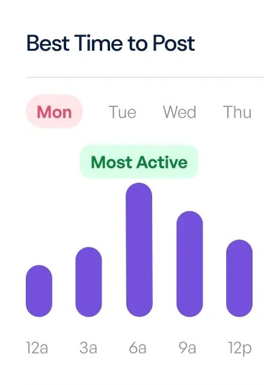

Create and
schedule
content quicker.
schedule
content quicker.
Social Media 10x
Faster with AI

Over 4,000 5-star reviews
Faster with AI
Over 4,000 5-star reviews
Schedule to
social media.

Optimize post timings
to publish content at
the perfect time for
your audience.
Write your
content
using AI.

content
using AI.

Manage
multiple
accounts and
platforms.
Maintain a
consistent
posting
schedule.
>56%
faster audience growth

faster audience growth

Grow followers
with non-stop
content.